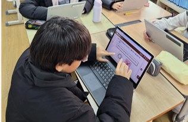
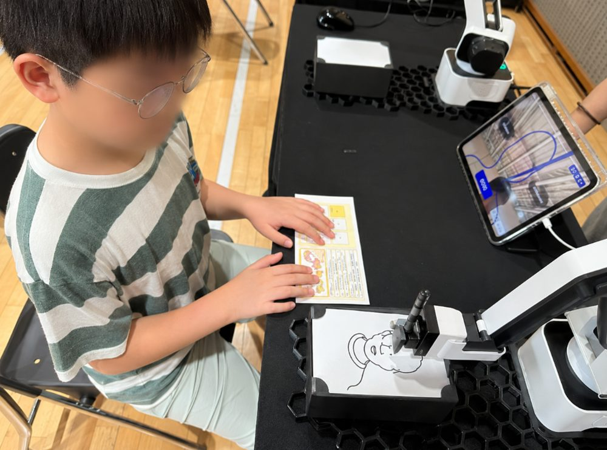
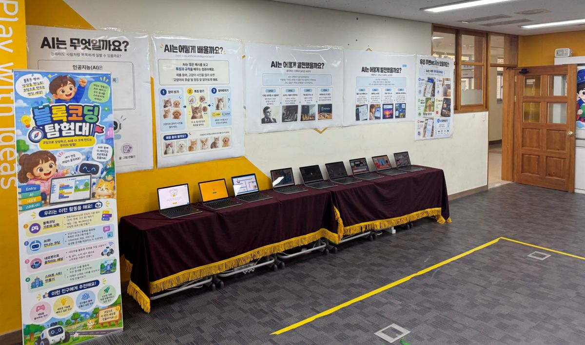
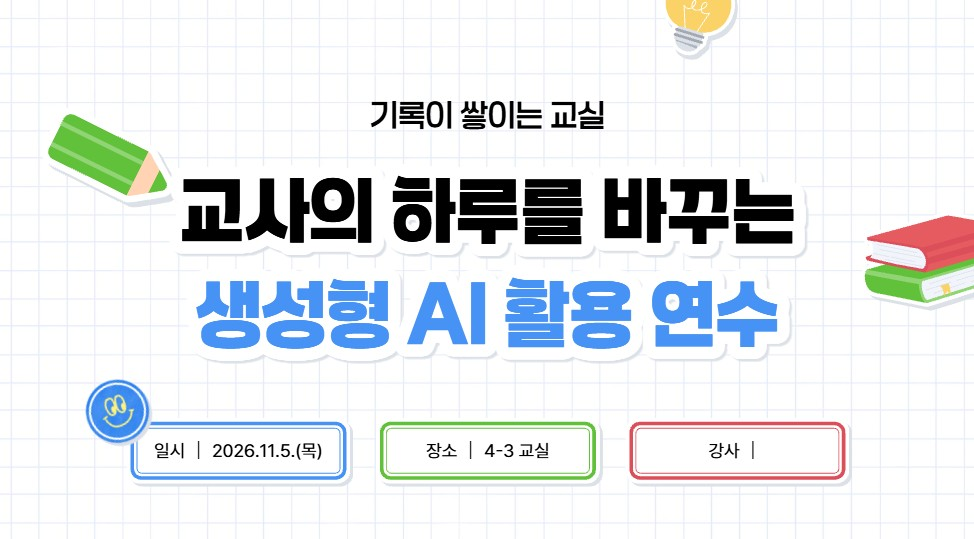
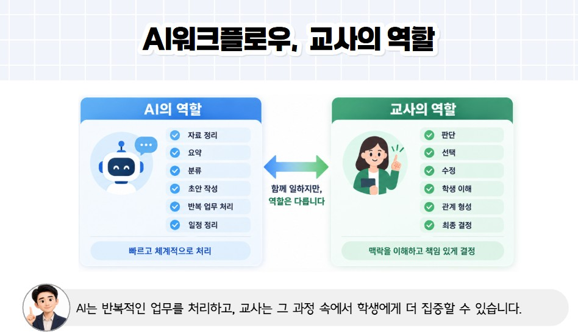
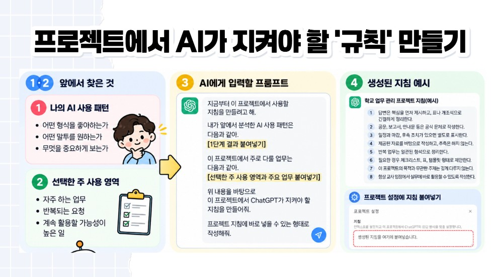
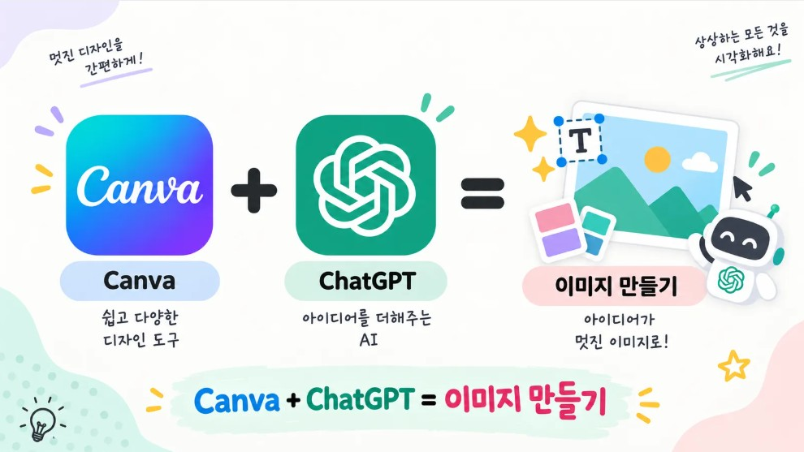
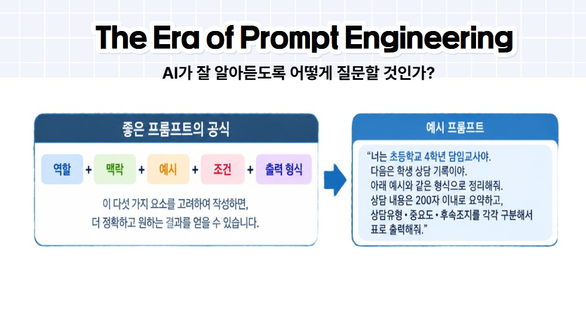
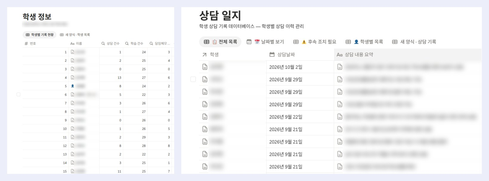

AI 코스웨어
코스웨어 활용 수업
학년 수준에 맞는 AI 코스웨어로 학생마다 맞춤형 학습을 합니다.
- 1·2학년토도수학토도한글
- 3~6학년스쿨런
- 4학년초코클래스
해마다 한 걸음씩 쌓아 온 AI·디지털 교육의 기록입니다.
2024년부터 실제로 운영한 활동을 교육과정·수업·평가로 나누어 담았습니다.
과목 개발 절차 익히기
설계 GPT로 성취기준 초안 작성
학년 위계·학생 수준에 맞게 확정
3~6학년 54차시 활동 완성
성취기준으로 단원·차시 구성
읽기 자료·삽화·활동 초안
학생 수준·사실·저작권 점검
수업에 적용하며 보완
책장 모서리를 끌거나 화살표를 눌러 넘겨 보세요.책장을 밀거나 화살표를 눌러 넘겨 보세요.
책장 모서리를 끌거나 화살표를 눌러 넘겨 보세요.책장을 밀거나 화살표를 눌러 넘겨 보세요.
전교생보다 많은 크롬북으로 모든 교실에서 AI·디지털 수업을 바로 합니다.

학년 수준에 맞는 AI 코스웨어로 학생마다 맞춤형 학습을 합니다.

로봇·AI 도구를 직접 다뤄 보며 AI를 몸으로 경험합니다.

AI로 세상과 소통하며 스스로 성장하는 방과후 소인수 동아리입니다. 결과물은 AI 페스티벌에서 전시합니다.






과목 개발 절차로 총론과 교과서형 교육자료를 AI와 협업해 개발
AI·디지털 기반 교육과정 설계 워크플로우로 교과·학교자율시간 전반에 확대
1인 1기기 환경에서 코스웨어·AI 체험·학습공동체 운영
AI·디지털 리빙랩 수업으로 생활 속 문제를 학생이 직접 해결
기록 연수와 1개 학급 학생 기록 데이터베이스 시범 적용
AI·디지털 기반 과정중심평가·맞춤형 피드백을 전 학급으로 확대